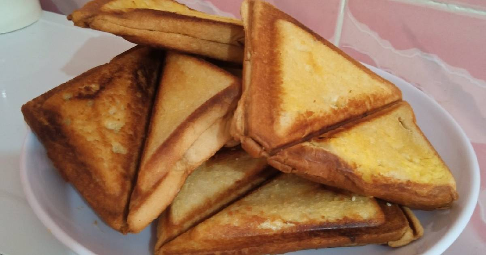

Toast Bread

Description
Basically this is the recipe of my favourite food;
toast bread, a savoury meal made with simple ingredients,
namely; bread, butter, egg(s), seasonings and whatever
miscellaneous ingredient you might choose to add, it's
basically an open source meal :).
Ingredient
- bread
- butter
- egg
- seasoning
- sardine(maybe)
Steps
- First step is you butter your bread
- Then you break your eggs and add to a suitable container to mix
- Next you add seasoning and sardine to your egg and make a good mix
- For the final step you place a slice of bread into the toaster, spread
your egg mixture on the first place then cover it up with a second slice,
place this into your toasting machine and voila :).